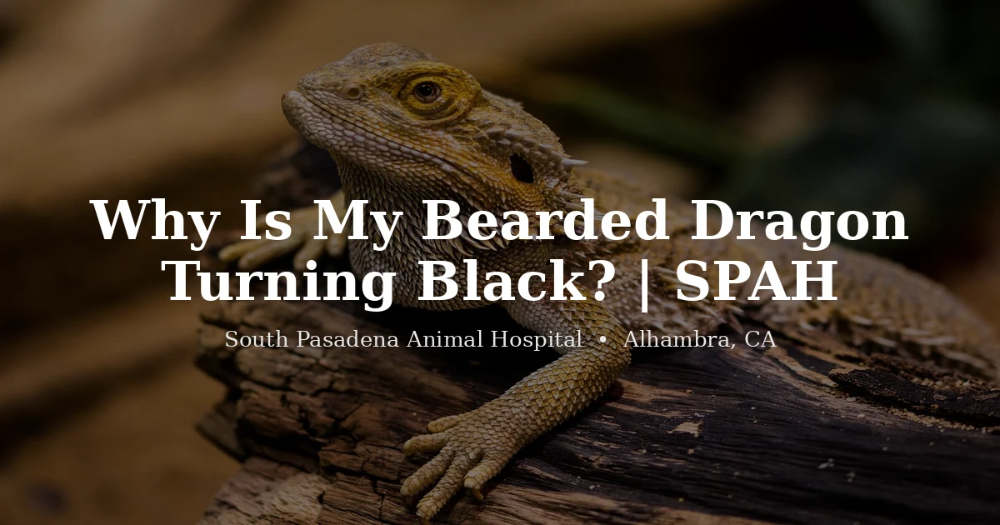

October 14, 2026 · 7 min read
Why Is My Bearded Dragon Turning Black?

When an owner sends us a photo of a bearded dragon gone dark, the first thing we ask isn't about the color — it's "what else is going on?" Bearded dragons change color constantly, and most of the time it's normal. The skin darkening is a tool they use, not a symptom by itself. What tells us whether to worry is the context around it: the time of day, the temperature, and whether the dragon is otherwise acting like itself.
So before you panic over a dark beard or a dusky body, let's walk through what the color is actually telling you.
The everyday reasons — and they're the most common
Warming up
Dark skin absorbs heat faster than light skin. A dragon that wakes up cool will often turn its back and belly darker while it basks, then lighten once it hits temperature. We see this most in the morning. If your dragon darkens first thing, soaks under the basking bulb, and brightens up an hour later, that's thermoregulation doing exactly what it's supposed to do.
The catch: if your dragon stays dark and keeps basking, that can mean the basking spot isn't getting hot enough. Grab a temperature gun and check. The basking surface should read 100–110°F for an adult. Stick-on dial thermometers are close to useless — we've lost count of how many "my setup is fine" tanks turned out to be ten degrees cold once we measured properly.
The black beard display
That dramatic jet-black beard is communication, not illness. Dragons puff and blacken the beard when they feel threatened, when they're establishing territory, when a reflection in the glass looks like a rival, and during mating season — which for males in Southern California tends to ramp up in late winter and spring. A beard that flares dark and then fades within minutes to an hour is a dragon talking, not a dragon in trouble.
Stress from the environment
A new tank, a recent move, a cage that's too small, a dog that stares through the glass, or a tank placed in a loud hallway can all keep a dragon darker than usual. Young dragons and recently adopted ones are especially prone to this. One pattern we see a lot: a dragon that "glass surfs" — clawing at the walls — and stays dark is usually telling you the enclosure feels wrong to it. Size, hides, and sight lines matter more than people expect.
When darkening is part of something bigger
Here's where the context matters. Color change becomes a real clue when it stops coming and going and starts sticking around, especially alongside other changes.
Brumation
Heading into brumation — the reptile version of winter dormancy — some dragons darken and dig and sleep more as they slow down. On its own, with a healthy-looking animal, that can be normal seasonal behavior. The problem is that brumation and illness look alike from across the room. If you can't tell which one you're watching, that uncertainty is reason enough for a baseline check. We'd rather tell you it's just brumation than have you wait out something that wasn't.
Illness and pain
A dragon that feels genuinely unwell often goes dark and stays that way. The color isn't the disease — it's a flag flying over one. The things we look for underneath a persistently dark dragon are the same ones that bring reptiles in generally: not eating, weight loss you can see along the hips and tail base, hiding, weakness, a swollen belly, open-mouth breathing or mucus, or straining with no stool. Metabolic bone disease, internal parasites, impaction, and respiratory infections can all leave a dragon dull and dark because it simply doesn't feel good enough to brighten up.
We're not going to tell you to diagnose that at home. The point is simpler: dark color plus a sick-looking dragon is a different situation than dark color in a bright-eyed, hungry one.
How to read your own dragon
Ask yourself three questions. Does the darkness come and go, or has it lasted all day? Are the temperatures actually measured and correct? And is the dragon still eating, moving, and alert? A dragon that darkens in the morning, basks, lightens, and eats breakfast is almost always fine. A dragon that stays dark through a warm afternoon, won't eat, and hides in a corner is telling you something you shouldn't sit on.
When to call a vet
We'd want to see a bearded dragon that:
- Stays dark all day regardless of temperature, for more than a few days
- Is dark and not eating for more than a week or two outside of brumation
- Is losing visible weight, or the belly looks swollen or hard
- Is lethargic — not basking, not moving toward food
- Has open-mouth breathing, wheezing, or mucus around the mouth or nose
- Shows any neurological signs: tremors, circling, a head tilt, or trouble righting itself
We see bearded dragons routinely at our reptile vet in Alhambra, and sorting out "normal color change" from "early illness" is one of the most useful things a reptile-experienced exam can do. Take a look at our exotic vet services or our pricing page if you'd like to know what a visit looks like.
Frequently Asked Questions
Is it bad if my bearded dragon turns black?
Not usually. Morning darkening to soak up heat and a short-lived black beard are both normal. It matters when the darkness lasts all day or shows up alongside not eating, hiding, or weakness. Color plus a sick-looking dragon is the combination worth a vet visit.
Why is my bearded dragon's beard black?
A black beard is almost always a display — stress, feeling threatened, defending territory, or mating-season behavior. It typically fades within minutes to an hour. A beard that stays dark for long stretches along with lethargy or appetite loss is less about mood and worth checking.
Does a bearded dragon turn black when it's cold?
Yes — darker skin warms up faster, so a cool dragon often darkens while basking. If yours stays dark, measure the basking spot with a temperature gun; it should reach 100–110°F for an adult. Temperatures that are quietly too low are one of the most common things we correct.
When should I take my darkening bearded dragon to the vet?
When the color stops coming and going, or arrives with other signs: not eating, weight loss, hiding, weakness, open-mouth breathing, a swollen belly, or any tremors or circling. On its own, dark color is a clue — paired with a dragon that looks unwell, it's a reason to be seen.